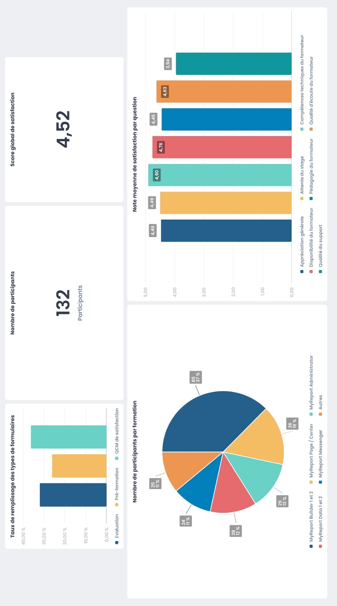

Présentation du projet
Équipe projet
Projet collaboratif de 3 personnes
Membres :
- Nathan Moizard
- Collaborateurs BUT SD
Livrables
- Dashboard Power BI interactif (fichier .pbix)
- Rapport d'analyse décisionnelle
- Base de données nettoyée et structurée
- Documentation des indicateurs
Temps investi
Temps total projet: 60 heures
Mon implication: 20 heures
Mes contributions
Nettoyage des données
Traitement des données brutes avec Excel et Power Query pour éliminer les incohérences.
Calcul de KPIs
Formulation et définition des indicateurs clés (taux de gravité, répartition par tranche d'âge).
Design du Dashboard
Création d'une charte graphique claire et conception des visualisations sous Power BI.
Contexte & Défis
Objectif : Concevoir un tableau de bord d'aide à la décision pour analyser les accidents de la route en France, identifier les facteurs de risque majeurs (météo, type de route, profil du conducteur) et proposer des visualisations interactives adaptées aux décideurs de la sécurité routière.
Problématiques :
- Traiter des volumes importants de données brutes contenant des valeurs manquantes et aberrantes.
- Définir des indicateurs de gravité pertinents et non biaisés.
- Créer une interface de dashboard ergonomique et interactive permettant d'explorer les données par filtres croisés.
Résultats & Preuves
Réalisations :
- Un dashboard Power BI complet avec 3 pages thématiques (vue globale, profils des usagers, facteurs environnementaux).
- Filtres interactifs par région, année, conditions météorologiques et type de véhicule.
- Cartographie dynamique mettant en évidence les zones d'accidents les plus denses.
Bilan personnel :
Ce projet m'a permis d'acquérir une solide maîtrise de Power BI et de Power Query. J'ai appris à concevoir des tableaux de bord interactifs professionnels et à traduire un grand volume de données en indicateurs directement exploitables pour la prise de décision.
Preuves du projet
Preuve 1 : Tableau de bord décisionnel

Preuve 2 : Indicateurs et statistiques
